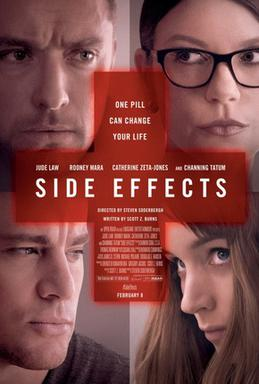
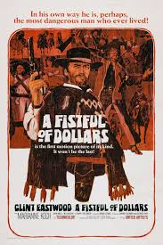
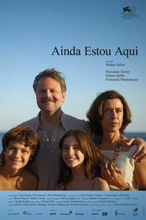
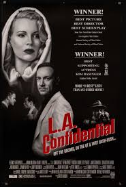

5 of my favourite movies:
5. Side effects
"Side Effects," directed by Steven Soderbergh, is a psychological thriller that delves into the complexities of mental health, medication, and the ethical dilemmas faced in the medical profession. Released in 2013, the film stars Rooney Mara as Emily Taylor, a woman struggling with severe anxiety and depression following her husband's release from prison. In her quest for relief, she begins taking a new antidepressant prescribed by her psychiatrist, Dr. Jonathan Banks, played by Jude Law. As the story unfolds, the film explores the consequences of pharmaceutical dependence and the dark side of mental health treatment. With unexpected twists and a gripping narrative, "Side Effects" raises important questions about the intersection of mental illness, medication, and morality. Soderbergh's direction, combined with strong performances from the cast, creates a tense atmosphere that keeps viewers on the edge of their seats, ultimately leading to a shocking conclusion that challenges perceptions of trust and betrayal in both personal and professional relationships
4. A fistful of dollars
"A Fistful of Dollars," directed by Sergio Leone and released in 1964, is a seminal Spaghetti Western that redefined the genre and introduced audiences to the iconic character of the "Man with No Name," portrayed by Clint Eastwood. This film marked the beginning of what would become known as the "Dollars Trilogy," a series that would solidify Eastwood's status as a cinematic legend. Set in a desolate border town, the story follows a mysterious gunslinger who arrives in the midst of a violent conflict between two rival families. As he navigates the treacherous landscape of greed and betrayal, the gunslinger uses his cunning and sharpshooting skills to manipulate both sides for his own gain. The film is characterized by its striking cinematography, memorable score by Ennio Morricone, and Leone's signature style of storytelling, which blends tension and dark humor. "A Fistful of Dollars" not only revitalized the Western genre but also influenced countless filmmakers and spawned a new wave of Italian cinema. With its themes of moral ambiguity and survival, the film remains a classic, showcasing the gritty realism and complex characters that have come to define the Spaghetti Western tradition.
3. Heat

"Heat," directed by Michael Mann and released in 1995, is a renowned crime thriller that explores the intense cat-and-mouse game between professional bank robber Neil McCauley (Robert De Niro) and LAPD detective Vincent Hanna (Al Pacino). Set in Los Angeles, the film delves into their personal struggles and moral dilemmas, showcasing the complexities of both sides of the law. The movie is celebrated for its meticulous attention to detail, particularly in its iconic action sequences, including a memorable downtown shootout. Mann's use of lighting, sound design, and a haunting score enhances the film's tense atmosphere. "Heat" stands out as a modern classic, examining themes of loyalty and ambition while featuring powerful performances from its lead actors.
2. I'm still here
"I'm Still Here" is a 2010 mockumentary film directed by Casey Affleck, featuring actor Joaquin Phoenix. The film follows Phoenix as he embarks on an unconventional journey after announcing his retirement from acting to pursue a career in hip-hop music. Blurring the lines between reality and performance, it captures his erratic behavior, struggles with fame, and personal turmoil. The film sparked considerable debate about its authenticity, leaving audiences questioning what is real and what is artifice in Phoenix's provocative transformation.
1. L.A. confidential
"L.A. Confidential," directed by Curtis Hanson and released in 1997, is a neo-noir crime film that delves into the dark underbelly of 1950s Los Angeles. Based on James Ellroy's novel of the same name, the film intricately weaves together the lives of three police officers—each embodying different facets of morality and ambition—as they navigate a web of corruption, scandal, and murder. Set against the backdrop of a city marked by glitz and glamour, "L.A. Confidential" explores themes of justice, loyalty, and the complexities of human nature. With a stellar cast featuring Kevin Spacey, Russell Crowe, Guy Pearce, and Kim Basinger, the film captivates audiences with its sharp dialogue, intricate plot twists, and rich character development. As it unfolds, "L.A. Confidential" not only serves as a gripping crime thriller but also offers a poignant commentary on the interplay between power and morality in a society obsessed with image. Its masterful storytelling and atmospheric cinematography earned it critical acclaim, solidifying its status as a modern classic in the genre.